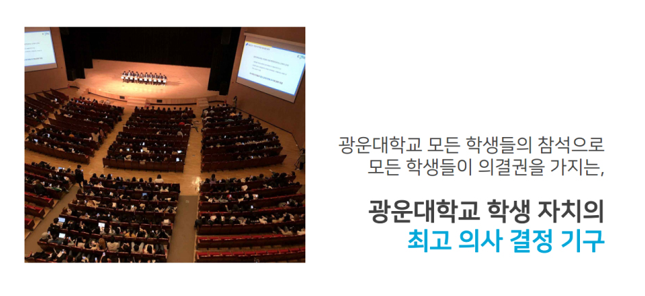
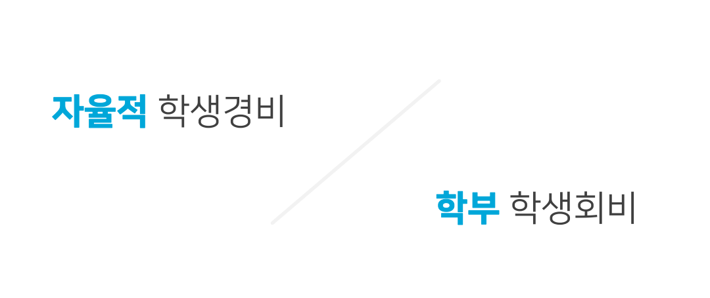

5. 학생총회 및 학생회비
학생총회란?

학생총회는 광운대학교 모든 학생의 참석으로 모든 학생들이 의결권을 가지는 모든 학생을 위한 광운대학교 학생자치의 최고 의사결정 기구입니다.
성립요건은 모든 재학생의 10%이상이 참석해야 성립됩니다.
1년에 단 1번만 개최될 수 있는 자리로 학교에 직접 목소리를 낼 수 있는 가장 중요한 행사라고도 볼 수 있습니다.
아직 일정이 잡히지 않은 관계로 추후에 날짜가 정해지면 공지해드릴 예정입니다!
자율적 학생경비와 학부 학생회비는 무엇인가요?

자율적 학생경비
자율적 학생경비는 매 학기 등록금 고지서에 징수되는 학생회비를 의미합니다.
총학생회, 총동아리연합회, 각 단과대 학생회가 매 학기 지분회의를 통해 이를 배분하여 학생 복지를 위한 행사에 사용됩니다.
학부 학생회비
학부 학생회비는 입학할 때 한 번 학부 학생회에 납부하는 회비를 의미합니다.
학부 학생회 주관의 공식 행사 진행 및 학생 복지를 위해 사용됩니다.
FAQ
Q: 학부 학생회비를 꼭 납부해야 하나요?
A: 학부 학생회비의 납부는 필수가 아닌 선택입니다.
하지만, 학부 학생회비는 여러분이 학교 생활을 하면서 즐기는 대부분의 다양한 행사가 학부 학생회비를 기반으로 이루어진다는 것을 기억해주세요!
Q: 납부한 학생회비는 어떻게 관리되나요?
A: 납부된 학생회비는 매 학기 소프트웨어융합대학 학생 대표자 회의에서 결산 공개를 진행해 투명하게 관리하고 있습니다.
또, 학생회비 납부자 명단을 학생회에서 관리하여 학생회비를 납부한 것으로 얻은 학우 여러분들의 권리를 지켜가고 있습니다.